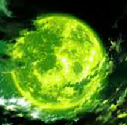

Important Events
The Dark Hour
The day transitioning to the Dark Hour
The Dark Hour is a period of time in which reality is distorted in many ways: normal humans transmogrify into coffins and become oblivious to everything around them; Shadows, suppressed human emotions given physical form, come out and attack any human that they call out of their coffins; the sky, the moon, and everything else is enveloped in an eerie green light; water turns to blood; and the biggest change is that their school changes into Tartarus, a large, maze-like tower where the Shadows reside. The only humans that can function during the Dark Hour, other than humans called by the Shadows, is those who possess the Potential; in other words, Persona-users. The only exception to this rule to ever be seen in the movie is Shuji Ikutsuki, as he stated that he used artificial methods of entering the dark hour.
Tartarus
A picture of Tartarus
Tartarus is essentially the Shadows' nest. Due to the distortions of the Dark Hour, the layout of Tartarus changes daily, making exploration difficult without exterior support. Makoto and the others must make it to the top of the tower - if there even is one - if they wish to solve the mysteries of the Dark Hour and how it came to be.
The Full Moon
Full moons aren't exactly sunshine and rainbows for Makoto and crew, as on these days a particularly strong Shadow appears outside of Tartarus in the city. They have to track it down and destroy it before it can cause too much damage and hopefully even free some of the Lost from Apathy Syndrome.
Strega's Appearance
Fanart of strega
Strega is a group of three rogue Persona Users who use the Dark Hour for their own personal benefits. They set up an internet website called "Revenge Request" where users can contract Strega to commit assassinations and other illegal activities, which the three carry out during the Dark Hour as they remove the protection of the coffins which allows them to do whatever they want with their victim. The members of Strega are artificial Persona users created by the Kirijo Group. They were picked up off the street and used as fodder for the corporation's experiments. Because their Personas were not awakened naturally, they must take suppressants supplied by Shuji Ikutsuki. The drugs keep their Personas from killing them, but have lethal side-effects. Out of the original hundred kids Kirijo used, only Strega survived.
Ikutsuki's Betrayal
After the defeat of the twelve Shadows, Ikutsuki shows a very different side of him to the party at the entrance of Tartarus. Manipulative, his dialogue speckled with evidence of his twisted savior complex, and his lack of remorse for what he's done. He then becomes hostile, attempting to kill the ones who relied on him and thought of him as a trustworthy figure.